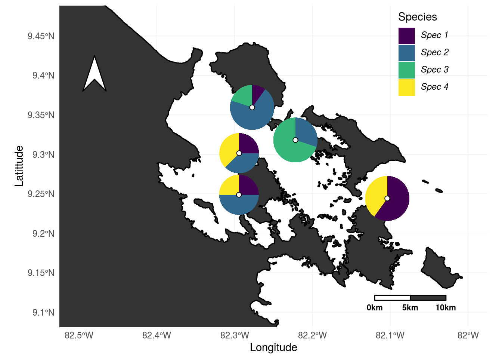
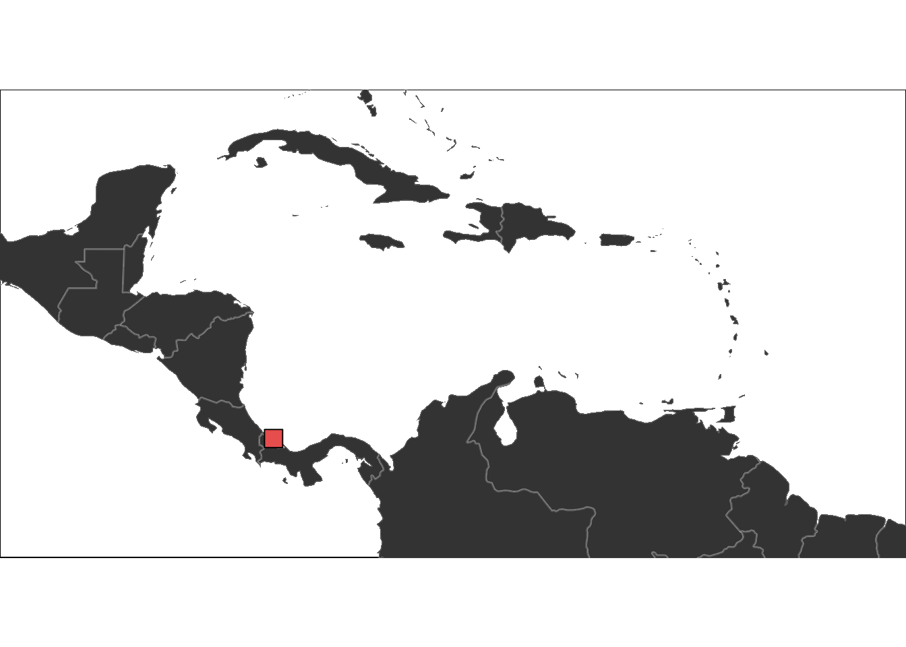
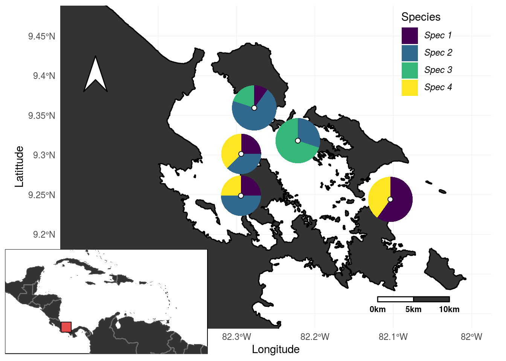

2 Pie map template
This template is based on the methods form the Hench et al. (2017) paper which compares hamlet observation at Puerto Rico reefs from 2000 (by Aguilar et al. 2003) and from 2017. The data that is used is completely made up though.
Here we will generate a map of the sampling area including pie charts that represent a species community.
We will make heavy use of ggplot2 package and several of its extensions (ggmap, scatterpie, cowplot). Further more we will need the grid packages and some of the Geo R packages: sf, maptools, rnaturalearth and rnaturalearthdata.
To start our R session we have to load the required R packages and set up our working environment:
library(tidyverse)
library(ggmap)
library(scatterpie)
library(cowplot)
library(sf)
library(maptools)
library(rnaturalearth)
library(rnaturalearthdata)
source('pie_map/functions.R')Then we have to read in the data (provided in the pie_map data folder). The original data contains the observations as well as meta data (sampling location and coordinates):
data <- read_delim('pie_map/data/sampling_spots.csv', delim = '\t') %>%
mutate(all = spec1 + spec2 + spec3 + spec4)| Latittude | Longitude | spot | spec1 | spec2 | spec3 | spec4 | all |
|---|---|---|---|---|---|---|---|
| 9.3594 | -82.2774 | Casa_blanca | 1 | 7 | 2 | 0 | 10 |
| 9.3014 | -82.2941 | Punta_Juan | 2 | 3 | 0 | 3 | 8 |
| 9.2487 | -82.2944 | Mangrove_point | 2 | 4 | 0 | 2 | 8 |
| 9.2441 | -82.1038 | Rhino_reef | 6 | 0 | 0 | 4 | 10 |
| 9.3181 | -82.2218 | Solarte_sur | 0 | 3 | 7 | 0 | 10 |
We will now define the limits of our map and read in the detailed shape-file. This file can be downloaded from gadm.org and copied to the data folder.
After the data download the pie_map folder should look like this
pie_map
├── data
│ ├── geography
│ │ ├── PAN_adm0.dbf
│ │ ├── PAN_adm0.prj
│ │ ├── PAN_adm0.sbn
│ │ ├── PAN_adm0.sbx
│ │ ├── PAN_adm0.shp
│ │ ├── PAN_adm0.shx
│ │ └── README.md
│ └── sampling_spots.csv
├── functions.R
└── README.mdAfter loading the shape-file, we are going to clip it according to the previously defined map boundaries:
# setting map boundaries
xlim = c(-82.5, -82); ylim = c(9.1, 9.47)
# reading in Panama shapefile
panama <- sf::st_read('pie_map/data/geography/PAN_adm0.shp')
bb <- bbox(xlim, ylim)
panama_cliped <- st_intersection(bb, panama)
#reformating shapefile to work with ggplot2Next we will prepare our labels for the pie charts and set the color for the land masses on the map.
# definig species label for legend
spec_labs <- expression(italic("Spec 1"), italic("Spec 2"), italic("Spec 3"), italic("Spec 4"))
# setting colors for the land mass
cFILL <- rgb(.2, .2, .2)Then we are going to produce the main map:
plot1 <- ggplot()+
# plot the land mass
geom_sf(panama, mapping = aes(), fill = cFILL, col = 'black')+
coord_sf(xlim = xlim, ylim = ylim)+
# plot the pies
geom_scatterpie(aes(x = Longitude, y = Latittude, group = spot, r = sqrt(all/1250)/pi),
data = data,
cols = c("spec1", "spec2", "spec3", "spec4"),
color = rgb(0, 0, 0, 0), lwd = .3)+
scale_fill_viridis_d(name = 'Species', label = spec_labs)+
# add points to the exact sampling points
geom_point(data = data, aes(x = Longitude, y = Latittude), shape = 21, fill = 'white', size = 2)+
# the lines below adds labels - this will probably look messy,
#but it can be sorted using inkscape or adobe illustrator
# geom_text(data = data, aes(x = Longitude, y = Latittude, label = spot), size = 3)+
# add compass
geom_north(xscale = 1.5, lon = -82.48, lat = 9.35, fill = 'white', col = 'black')+
# add scale bar
scaleBar(lon = -82.12, lat = 9.115, distanceLon = 5, distanceLat = .7,
distanceLegend = -1, dist.unit = "km", orientation = F,
rec2.fill = cFILL, legend.size = 2)+
# layout
theme_minimal()+
theme(legend.position = c(.85, .85))
Then we are going to create a secondary map to indicate the general position within the Caribbean.
For this, we first are going to define the boundaries of the secondary map and than we are going to load the world data (from the rnaturalearthdata package).
# settings for Caribbean overview
xlimW = c(-93, -55); ylimW = c(5, 24)
world <- ne_countries(scale = "medium", returnclass = "sf")
# Caribbean map:
plot2 <- ggplot() +
geom_sf(data = world, fill = cFILL, col = rgb(1, 1, 1, .2))+
coord_sf(xlim = xlimW, ylim = ylimW, datum = NA)+
geom_point(data = data[1, ], aes(x = Longitude, y = Latittude),
fill = rgb(.9, .3, .3),
shape = 22, size = 5, col = 'black')+
theme_void()+
theme(panel.background = element_rect(fill = 'white', color = 'black'))
Finally, we use the cowplot package to combine the two plots:

If we want, we can now export the map and tweak last details using inkscape or adobe illustrator (this can be useful if pie charts are overlapping or labels are messy):
ggsave('pie_map.pdf', width = 8, height = 6, device = cairo_pdf)References
Hench, K., W. O. Mcmillan, R. Betancur-R, and O. Puebla. 2017. “Temporal Changes in Hamlet Communities (Hypoplectrus Spp., Serranidae) over 17 Years.” Journal of Fish Biology 91 (5). Blackwell Publishing Ltd: 1475–90. doi:10.1111/jfb.13481.